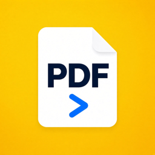

PDF Go
Datenschutz · Privacy
Datenschutzerklärung
Stand: 16. September 2026
PDF Go ist eine App für iPhone zum Scannen, Ausfüllen und Unterschreiben von PDF-Dokumenten. Diese Erklärung sagt in einfachen Worten, was mit deinen Daten passiert: Sie bleiben auf deinem Gerät.
Keine Erfassung von Daten
PDF Go hat kein Benutzerkonto, keinen eigenen Server, keine Werbung und kein Tracking. Die App sammelt keine personenbezogenen Daten und sendet nichts an uns oder an Dritte. Es gibt keine Analyse-Werkzeuge in der App.
Deine Dokumente
Fotos, Scans, PDFs, Unterschriften, Formularangaben und die Angaben unter „Meine Angaben“ werden ausschließlich lokal auf deinem iPhone gespeichert. Texterkennung, Gesichts- und Rahmenerkennung laufen auf dem Gerät. Wenn du ein Dokument teilst, geht es genau dorthin, wo du es schickst, zum Beispiel per AirDrop, E-Mail oder in eine andere App. Darauf haben wir keinen Zugriff.
Berechtigungen
Kamera: nur zum Scannen und Fotografieren, wenn du es auslöst. Fotos: nur für die Bilder, die du auswählst. Face ID oder Touch ID: optional zum Sperren der App; die biometrischen Daten verbleiben bei iOS. Standort: nur, wenn du den Ortsstempel einschaltest, und nur zur Beschriftung deiner Scans.
Sicherung durch iOS
Nutzt du die iCloud-Sicherung oder Backups deines iPhones, sichert Apple die App-Daten wie bei jeder anderen App. Dafür gilt die Datenschutzerklärung von Apple.
Löschen
Du löschst Dokumente in der App oder entfernst die App. Damit sind die Daten weg. Bei uns gibt es nichts zu löschen, weil wir nichts haben.
Kinder
Die App richtet sich nicht speziell an Kinder und erhebt auch von Kindern keine Daten.
Änderungen
Ändert sich diese Erklärung, wird die neue Fassung hier veröffentlicht. Das Datum oben zeigt den Stand.
Kontakt
Abbas Hoseiny, Deutschland. Fragen zum Datenschutz über die Support-Seite.
Privacy Policy
Last updated: 16 September 2026
PDF Go is an iPhone app for scanning, filling in and signing PDF documents. This policy says in plain words what happens to your data: it stays on your device.
No data collection
PDF Go has no user account, no server of its own, no advertising and no tracking. The app does not collect personal data and sends nothing to us or to third parties. There are no analytics tools in the app.
Your documents
Photos, scans, PDFs, signatures, form entries and the values under “My details” are stored only locally on your iPhone. Text recognition, face and frame detection run on the device. When you share a document, it goes exactly where you send it, for example via AirDrop, email or another app. We have no access to it.
Permissions
Camera: only for scanning and taking pictures when you start it. Photos: only for the pictures you pick. Face ID or Touch ID: optional, to lock the app; biometric data stays with iOS. Location: only if you turn on the place stamp, and only to label your scans.
Backups by iOS
If you use iCloud Backup or back up your iPhone, Apple backs up the app's data like any other app's. Apple's privacy policy applies to that.
Deleting
Delete documents in the app or remove the app, and the data is gone. There is nothing to delete on our side because we hold nothing.
Children
The app is not aimed at children and does not collect data from children.
Changes
If this policy changes, the new version is published here. The date above shows the current version.
Contact
Abbas Hoseiny, Germany. Privacy questions via the support page.
Política de privacidad
Actualizado: 16 de septiembre de 2026
PDF Go es una app para iPhone para escanear, rellenar y firmar documentos PDF. Esta política explica en palabras sencillas qué pasa con tus datos: se quedan en tu dispositivo.
Sin recopilación de datos
PDF Go no tiene cuenta de usuario, ni servidor propio, ni publicidad, ni rastreo. La app no recopila datos personales y no envía nada a nosotros ni a terceros. No hay herramientas de análisis en la app.
Tus documentos
Fotos, escaneos, PDF, firmas, datos de formularios y los valores de «Mis datos» se guardan solo localmente en tu iPhone. El reconocimiento de texto, de caras y de marcos se ejecuta en el dispositivo. Cuando compartes un documento, va exactamente adonde lo envías, por ejemplo por AirDrop, correo u otra app. No tenemos acceso a él.
Permisos
Cámara: solo para escanear y fotografiar cuando tú lo inicias. Fotos: solo para las imágenes que eliges. Face ID o Touch ID: opcional, para bloquear la app; los datos biométricos se quedan en iOS. Ubicación: solo si activas el sello de lugar, y solo para etiquetar tus escaneos.
Copias de seguridad de iOS
Si usas la copia de iCloud o haces copia de tu iPhone, Apple guarda los datos de la app como los de cualquier otra. Se aplica la política de privacidad de Apple.
Borrar
Borra documentos en la app o elimina la app y los datos desaparecen. No hay nada que borrar por nuestra parte porque no guardamos nada.
Menores
La app no está dirigida a niños y no recopila datos de niños.
Cambios
Si esta política cambia, la nueva versión se publica aquí. La fecha de arriba muestra la versión actual.
Contacto
Abbas Hoseiny, Alemania. Preguntas sobre privacidad a través de la página de soporte.
Gizlilik Politikası
Güncelleme: 16 Eylül 2026
PDF Go, PDF belgelerini taramak, doldurmak ve imzalamak için bir iPhone uygulamasıdır. Bu politika verilerine ne olduğunu sade sözlerle anlatır: Cihazında kalırlar.
Veri toplama yok
PDF Go'da kullanıcı hesabı, kendi sunucusu, reklam ve izleme yoktur. Uygulama kişisel veri toplamaz; bize ya da üçüncü taraflara hiçbir şey göndermez. Uygulamada analiz aracı yoktur.
Belgelerin
Fotoğraflar, taramalar, PDF'ler, imzalar, form girişleri ve “Bilgilerim” altındaki değerler yalnızca iPhone'unda yerel olarak saklanır. Metin, yüz ve çerçeve tanıma cihazda çalışır. Bir belgeyi paylaştığında tam olarak gönderdiğin yere gider, örneğin AirDrop, e-posta veya başka bir uygulama. Buna erişimimiz yoktur.
İzinler
Kamera: yalnızca sen başlattığında tarama ve fotoğraf için. Fotoğraflar: yalnızca seçtiğin resimler için. Face ID veya Touch ID: isteğe bağlı, uygulamayı kilitlemek için; biyometrik veriler iOS'ta kalır. Konum: yalnızca yer damgasını açarsan ve yalnızca taramalarını etiketlemek için.
iOS yedekleri
iCloud Yedekleme kullanıyor veya iPhone'unu yedekliyorsan Apple, uygulama verilerini diğer uygulamalar gibi yedekler. Bunun için Apple'ın gizlilik politikası geçerlidir.
Silme
Belgeleri uygulamada sil veya uygulamayı kaldır; veriler gider. Bizde silinecek bir şey yoktur, çünkü hiçbir şey tutmuyoruz.
Çocuklar
Uygulama çocuklara yönelik değildir ve çocuklardan veri toplamaz.
Değişiklikler
Bu politika değişirse yeni sürüm burada yayımlanır. Üstteki tarih güncel sürümü gösterir.
İletişim
Abbas Hoseiny, Almanya. Gizlilik soruları için destek sayfası.
سياسة الخصوصية
آخر تحديث: 16 سبتمبر 2026
PDF Go تطبيق لهاتف iPhone لمسح مستندات PDF وتعبئتها وتوقيعها. توضح هذه السياسة بكلمات بسيطة ما يحدث لبياناتك: تبقى على جهازك.
لا جمع للبيانات
لا يوجد في PDF Go حساب مستخدم ولا خادم خاص ولا إعلانات ولا تتبّع. لا يجمع التطبيق بيانات شخصية ولا يرسل شيئًا إلينا أو إلى أطراف ثالثة. لا توجد أدوات تحليل في التطبيق.
مستنداتك
تُحفظ الصور والمسحات وملفات PDF والتوقيعات ومدخلات النماذج والقيم الموجودة تحت «بياناتي» محليًا فقط على هاتفك. يعمل التعرف على النص والوجوه والإطارات على الجهاز. عندما تشارك مستندًا، يذهب تمامًا إلى حيث ترسله، مثل AirDrop أو البريد الإلكتروني أو تطبيق آخر. لا نملك أي وصول إليه.
الأذونات
الكاميرا: فقط للمسح والتصوير عندما تبدأه بنفسك. الصور: فقط للصور التي تختارها. Face ID أو Touch ID: اختياري لقفل التطبيق؛ تبقى البيانات الحيوية لدى iOS. الموقع: فقط إذا فعّلت ختم المكان، وفقط لوسم مسحاتك.
النسخ الاحتياطي عبر iOS
إذا كنت تستخدم نسخ iCloud الاحتياطي أو تنسخ هاتفك احتياطيًا، فإن Apple تنسخ بيانات التطبيق كأي تطبيق آخر. تسري على ذلك سياسة خصوصية Apple.
الحذف
احذف المستندات في التطبيق أو أزل التطبيق، فتختفي البيانات. لا يوجد ما نحذفه من جانبنا لأننا لا نحتفظ بشيء.
الأطفال
التطبيق غير موجّه للأطفال ولا يجمع بيانات منهم.
التغييرات
إذا تغيّرت هذه السياسة، تُنشر النسخة الجديدة هنا. يوضح التاريخ أعلاه النسخة الحالية.
التواصل
عباس حسيني، ألمانيا. أسئلة الخصوصية عبر صفحة الدعم.
سیاست حریم خصوصی
آخرین بهروزرسانی: ۱۶ سپتامبر ۲۰۲۶
PDF Go برنامهای برای iPhone است برای اسکن، پر کردن و امضای اسناد PDF. این سیاست به زبان ساده میگوید با دادههای شما چه میشود: روی دستگاه شما میمانند.
بدون جمعآوری داده
PDF Go حساب کاربری، سرور اختصاصی، تبلیغات و ردیابی ندارد. برنامه داده شخصی جمع نمیکند و چیزی برای ما یا اشخاص ثالث نمیفرستد. هیچ ابزار تحلیلی در برنامه وجود ندارد.
اسناد شما
عکسها، اسکنها، PDFها، امضاها، ورودیهای فرم و مقادیر بخش «اطلاعات من» فقط بهصورت محلی روی iPhone شما ذخیره میشوند. تشخیص متن، چهره و کادر روی دستگاه انجام میشود. وقتی سندی را به اشتراک میگذارید، دقیقاً به همانجا میرود که میفرستید، مثلاً AirDrop، ایمیل یا برنامهای دیگر. ما به آن دسترسی نداریم.
مجوزها
دوربین: فقط برای اسکن و عکسبرداری وقتی خودتان شروع کنید. عکسها: فقط برای تصاویری که انتخاب میکنید. Face ID یا Touch ID: اختیاری برای قفل برنامه؛ دادههای بیومتریک نزد iOS میماند. موقعیت: فقط اگر مهر مکان را روشن کنید و فقط برای برچسبگذاری اسکنها.
پشتیبانگیری iOS
اگر از پشتیبان iCloud استفاده میکنید یا از iPhone خود پشتیبان میگیرید، Apple دادههای برنامه را مانند هر برنامه دیگری پشتیبان میگیرد. سیاست حریم خصوصی Apple بر آن حاکم است.
حذف
اسناد را در برنامه حذف کنید یا برنامه را پاک کنید؛ دادهها از بین میروند. در سمت ما چیزی برای حذف نیست چون چیزی نگه نمیداریم.
کودکان
برنامه برای کودکان طراحی نشده و از کودکان دادهای جمع نمیکند.
تغییرات
اگر این سیاست تغییر کند، نسخه جدید اینجا منتشر میشود. تاریخ بالا نسخه فعلی را نشان میدهد.
تماس
عباس حسینی، آلمان. پرسشهای حریم خصوصی از طریق صفحه پشتیبانی.
رازداری کی پالیسی
آخری تازہ کاری: 16 ستمبر 2026
PDF Go ایک iPhone ایپ ہے جو PDF دستاویزات اسکین کرنے، بھرنے اور دستخط کرنے کے لیے ہے۔ یہ پالیسی سادہ الفاظ میں بتاتی ہے کہ آپ کے ڈیٹا کا کیا ہوتا ہے: وہ آپ کے آلے پر رہتا ہے۔
ڈیٹا جمع نہیں کیا جاتا
PDF Go میں کوئی صارف اکاؤنٹ، اپنا سرور، اشتہار یا ٹریکنگ نہیں ہے۔ ایپ ذاتی ڈیٹا جمع نہیں کرتی اور ہمیں یا کسی تیسرے فریق کو کچھ نہیں بھیجتی۔ ایپ میں کوئی تجزیاتی ٹول نہیں ہے۔
آپ کی دستاویزات
تصاویر، اسکین، PDF، دستخط، فارم کی معلومات اور «میری معلومات» کی قدریں صرف آپ کے iPhone پر مقامی طور پر محفوظ ہوتی ہیں۔ متن، چہرے اور فریم کی شناخت آلے پر ہوتی ہے۔ جب آپ کوئی دستاویز شیئر کرتے ہیں تو وہ بالکل وہیں جاتی ہے جہاں آپ بھیجتے ہیں، مثلاً AirDrop، ای میل یا کسی اور ایپ میں۔ ہمیں اس تک رسائی نہیں۔
اجازتیں
کیمرہ: صرف اسکین اور تصویر کے لیے جب آپ شروع کریں۔ تصاویر: صرف ان تصاویر کے لیے جو آپ چنیں۔ Face ID یا Touch ID: اختیاری، ایپ لاک کرنے کے لیے؛ بایومیٹرک ڈیٹا iOS کے پاس رہتا ہے۔ مقام: صرف اگر آپ جگہ کا ٹھپہ آن کریں، اور صرف اسکین پر لیبل کے لیے۔
iOS بیک اپ
اگر آپ iCloud بیک اپ استعمال کرتے ہیں یا اپنے iPhone کا بیک اپ لیتے ہیں تو Apple ایپ کا ڈیٹا دوسری ایپس کی طرح محفوظ کرتا ہے۔ اس پر Apple کی رازداری کی پالیسی لاگو ہوتی ہے۔
حذف کرنا
ایپ میں دستاویزات حذف کریں یا ایپ ہٹا دیں، ڈیٹا ختم ہو جاتا ہے۔ ہماری طرف حذف کرنے کو کچھ نہیں کیونکہ ہمارے پاس کچھ نہیں ہوتا۔
بچے
ایپ بچوں کے لیے نہیں ہے اور بچوں سے ڈیٹا جمع نہیں کرتی۔
تبدیلیاں
اگر یہ پالیسی بدلے تو نیا ورژن یہاں شائع ہوگا۔ اوپر کی تاریخ موجودہ ورژن بتاتی ہے۔
رابطہ
عباس حسینی، جرمنی۔ رازداری کے سوالات سپورٹ صفحے کے ذریعے۔